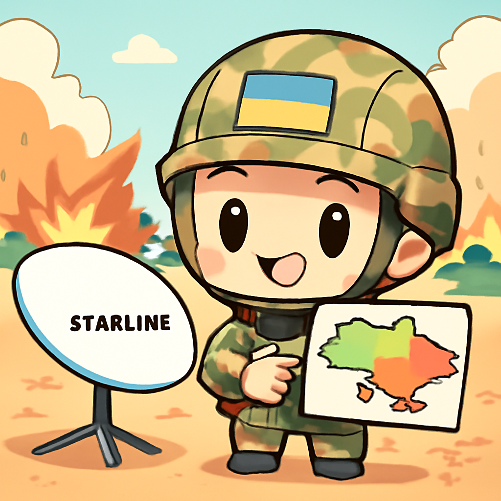
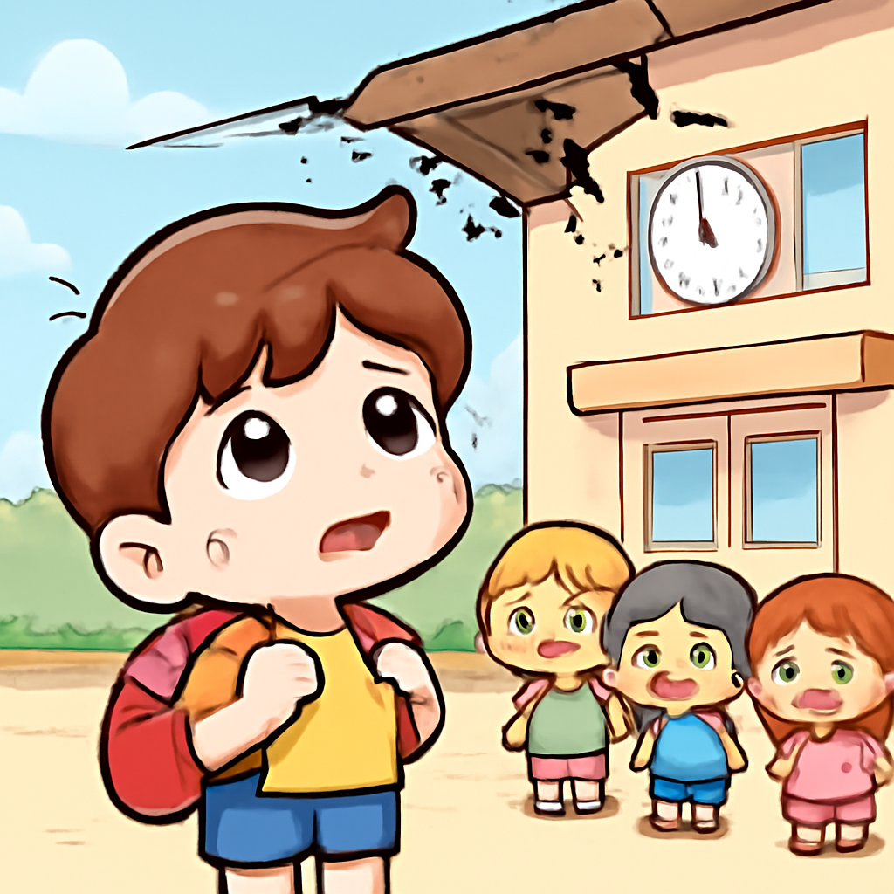
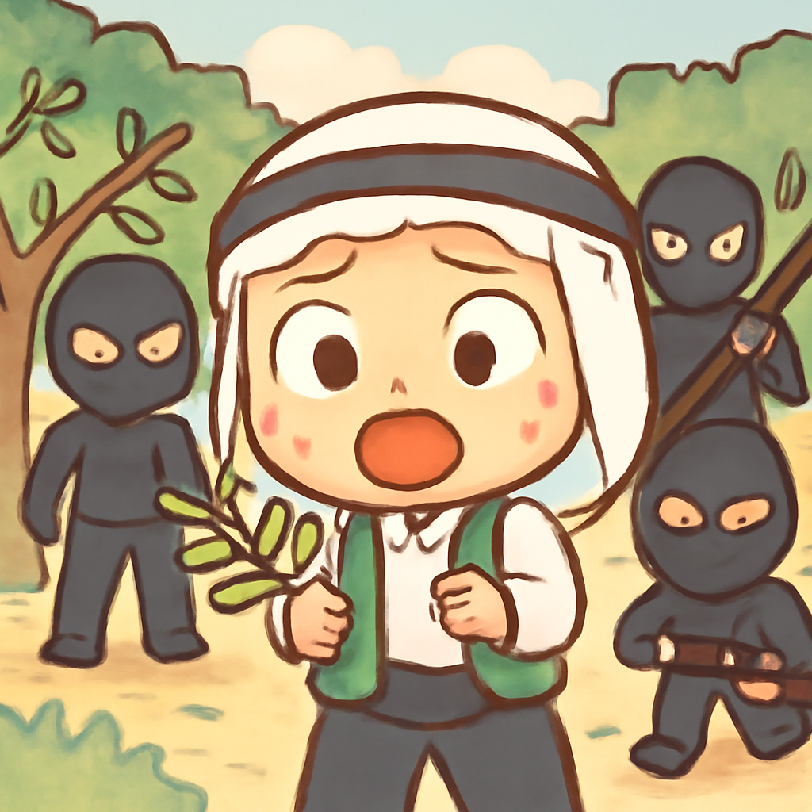

其一 · 烏克蘭 · 烏克蘭反攻進展
烏克蘭在頓巴斯地區取得關鍵進展

在烏克蘭頓巴斯地區，烏克蘭軍隊的反攻行動取得了一些關鍵的領土回收，這一切都得益於Starlink的支持。這不是單純的戰爭，而是一場科技與地面戰鬥的結合，讓人們看到未來戰爭的樣子。希望這些進展能夠促進和平，讓烏克蘭人能早日重返正常生活。
🔗 原始新聞 ↗
2026-10-17 · 以古觀今，以笑抗愁
烏克蘭在頓巴斯地區取得關鍵進展

在烏克蘭頓巴斯地區，烏克蘭軍隊的反攻行動取得了一些關鍵的領土回收，這一切都得益於Starlink的支持。這不是單純的戰爭，而是一場科技與地面戰鬥的結合，讓人們看到未來戰爭的樣子。希望這些進展能夠促進和平，讓烏克蘭人能早日重返正常生活。
🔗 原始新聞 ↗
巴基斯坦學校屋頂坍塌造成32人喪生

巴基斯坦西北部發生了一起悲劇性的事件，導致32名兒童和一名教師不幸遇難，事故引發了對全國學校安全檢查的討論。這讓人不禁思考，建築安全的重要性和相關監管措施的必要性。希望未來能確保所有孩子在安全的環境中學習，而不是在危險的屋簷下。
🔗 原始新聞 ↗
以色列定居者在西岸攻擊巴勒斯坦人

在西岸地區，巴勒斯坦人在收穫橄欖的時候遭到以色列定居者的襲擊，這一事件再次突顯了當地持續的緊張局勢。這不僅是對人權的侵犯，也是對當地經濟生計的直接威脅。橄欖樹對於巴勒斯坦人來說，不僅是經濟來源，更是文化的象徵。希望國際社會能對此有所反應。
🔗 原始新聞 ↗
意大利國防部長批評特朗普限制烏克蘭支援
意大利國防部長Crosetto近日指出，特朗普對烏克蘭援助的限制是完全錯誤的，並警告美國這樣做可能會延長俄羅斯的入侵。這不僅關乎烏克蘭的未來，也影響到歐洲的安全局勢。希望各國能夠團結，共同抵抗侵略，而不是讓歷史重演。
🔗 原始新聞 ↗
胡塞武裝攻擊影響沙特的商業活動
伊朗支持的胡塞武裝對沙特的攻擊活動日益頻繁，這讓沙特的體育賽事和商業活動受到威脅。沙特一直試圖通過這些活動來提升國際形象和吸引投資，但如今卻面臨著被迫改變計畫的窘境。希望這場衝突能有個平和的解決，讓沙特能回到正常的賽事安排中。
🔗 原始新聞 ↗